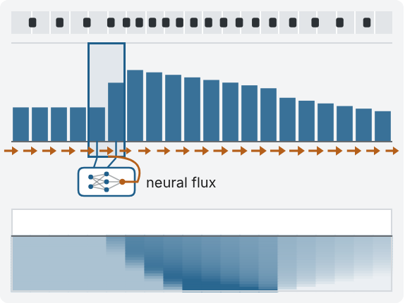

Discrete flow maps with reinforcement learning
Flow maps for discrete data, trained with reinforcement learning, applied to text generation and robot actions.
Machine learning researcher · MS in Machine Learning, Carnegie Mellon University (Dec. 2026)
Hi, I'm Martin Drieux, an MS in Machine Learning student at Carnegie Mellon University, advised by Max Simchowitz. I previously worked on generative modeling with Nicholas Boffi, on flow maps, and in Zico Kolter's group, on Mean Flow models. My interests are generative modeling and LLM post-training, which I worked on this summer as a research scientist intern at Mistral AI.
Before that, I studied applied math, physics and computer science at École Polytechnique, and worked on AI for scientific computing with Alexandre Bayen at BAIR, UC Berkeley.
Applied math, physics and ML · GPA 3.96/4.0
Two-year intensive program in math and physics, preparing for the entrance exams of the French engineering schools
Silver medal internationally (2nd of 21 teams), gold nationally · projects below
An upcoming project and two research papers, then five problems our team worked on for the International Physicists' Tournament 2024.
Flow maps for discrete data, trained with reinforcement learning, applied to text generation and robot actions.
Same noise, same field (arrows). Left: following the equilibrium field, small steps settle on the data (green). Right: the equilibrium flow map gets there in a few jumps. (Toy 2D example, exact map.)
Flow maps make flow models fast by jumping along the flow. Equilibrium models drop the time input and let samples settle on the data, which makes refinement natural but takes infinitely long. Can one model do both?

A small neural network computes the flow of cars between neighboring cells, then each cell is updated. (Illustration: flows computed with a classical scheme.)
Conservation laws describe traffic, fluids and waves, and their solutions develop sharp jumps, like the back of a traffic jam. Can a neural network solve them accurately without breaking conservation?
Open physics problems, each worked on for a year by our team of six students.
Two antibubbles. Each is a ball of liquid inside a thin shell of air (the dark ring).
The problemAn antibubble is water trapped in water, inside a thin shell of air. How do they form? How large and how long-lived can you make them, and are size and lifetime related?
Close-up view of the tiny bubbles in Ricard. As they rise and leave, the bottle rings normally again.
The problemSome Brazilian distilleries judge their spirit by the sound of the bottle: tapped right after being turned upside down, it gives a short, dull sound instead of ringing. What causes this? Why does it fail with carbonated drinks, and which liquids keep the effect longest?
Pegs at the 13 largest French cities, joined by soap films (4× speed).
The problemIf you let water flow in a maze, you get a physical maze-solving algorithm. Many other algorithms and computations can be done with physical systems. Create a water-based computer, without electronics, that solves an NP-hard problem.
The pool video from the problem statement, partly sped up. A plate pushed through the water leaves two dark shadows on the floor.
The problemDrag a plate through still water and two black circles appear on the bottom of the pool: the shadows of whirlpools at the surface. From a short video of the shadows, can you predict how long the whirlpools will last?
Our simulation of a Galton board (2× speed). Beads bounce through the pegs and pile up in the bins.
The problemBeads dropped through rows of evenly spaced pegs are said to pile up in a bell shape (a binomial distribution). Can changing the pegs, their layout or the beads give other shapes? Can independent, identical beads escape the central limit theorem? What if the board vibrates?